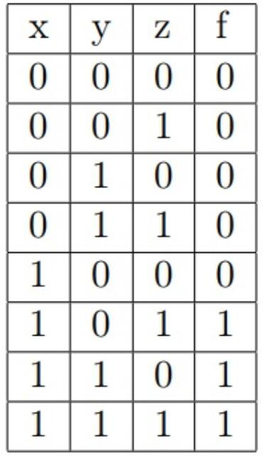

Codeforces，每周举办高质量的算法比赛，同时承办许多国外知名企业举办的算法竞赛，算法爱好者的交流学习基地。
Codeforces913E 贪心思想与最短路模型
引出
也许是前段时间的Goodbye2017题目难度没把握好，也许是tourist手痒出了几道题没地方放，今年居然又搞了一场Hello2018，非常刺激啊！主要是因为Codeforces按照排名来加减分，这种div.1+div.2 Combined的比赛相对来说比较好上分，更是div.1垫底选手的唯一上分机会了。这场比赛的ABCD相对简单，FGH也没有注水成分，最有意思也最拉开差距的就是这道E题了。
题目链接<
题意

输入第一行是测试数据组数，然后每行输入一串数表示一个真值表。对于每个真值表，要求输出所有符合这个真值表的逻辑表达式中，长度最小、长度相等时字典序最小的那个。
举个例子，比如输入 00000111，就表示右图这个真值表（输入的是右边一列从上到下）。我们要找到一个由xyz、与或非、括号构成的合法的逻辑表达式，且符合这个真值表。比如x&(y|z)，(y|z)&x或者!(!x|!y&!z)这些都符合条件。然后在它们中选择并输出长度最小、长度相等时字典序最小的那个，比如这个例子中输出应为 (y|z)&x。
数据范围：测试数据组数N ≤ 10000，时间限制3秒。
寻找思路
从真值表中化简逻辑表达式，《数字逻辑》中学过的卡诺图与之有点关系。但是利用卡诺图化简逻辑表达式的过程比较灵活、很难用算法表达。此外，即使是同样长度的合法表达式也可能很多，如何找到字典序最小的那个呢？
我们可以先观察一下数据范围。题干中的1w组测试数据其实是唬人的，因为一共只有x,y,z三个布尔变量，真值表只有2^3=8个不同元素，那么总共就有2^8=256种不同的真值表。也就是说，只要能一开始把这256个真值表的答案全部算出来并存下来，就能O(1)地回答问题。如果采用一些比赛技巧，我们甚至可以用“打表”的方式，事先用复杂度可能较高的算法在本地把答案算出来，然后直接开数组提交答案，比如这份代码这样。
即使如此，直接暴搜/枚举是肯定不可行的。比如10010110这个数据的答案是 !(!x&y|!y&x|z)|!x&y&z|!y&x&z，长达28个字符，以搜索算法阶乘级的复杂度显然难以承受。
考虑到了这里，我们就遇到了这个题目的第一个思维难点。如果不能观察到这个问题中的一些特殊性质，解题就陷入了僵局。
我们不妨先手算几个式子，找找规律。比如说00101110这个数据，它的答案应该是是!y&x|!z&y。我们不难发现!y&x和!z&y分别表示00001100和00100010这两个真值表，而且它们分别都是这两个真值表的最优解。现在我把它们“或”起来，就得到了00101110的最优解。
一般地说，假如现在有一个真值表k，它的最终答案一定可以表示成A&B、A|B或者!A的形式，其中A和B表示两个非空的式子，且A和B分别是它们所对应的真值表的最优式子。可以用反证法证明这个结论：假设A对应真值表的答案是A'，且A'!=A，那么在k的最终答案中，用A'来替换A，得到的新的式子一定比k优秀，与假设矛盾。
根据上面的想法，每当我们选取一个真值表作为研究对象，都可以尝试是否能用其他所有式子的有限种两两组合来得到最优解。那么反过来，如果我们确定了一个真值表的最优解是什么，我们就可以把这个式子和其他真值表的最优解进行两两组合，就可能得出新的最优解。
上面这种“每步都取最优解”的思路其实就是一种贪心的思想。一般来说，当一个问题的最优解包含其子问题的最优解时，称此问题具有最优子结构性质。运用贪心策略在每一次转化时都取得了最优解。问题的最优子结构性质是该问题可用贪心算法或动态规划算法求解的关键特征。
巧妙构图
观察出了这道题的最优子结构性质之后，用动态规划的方法应该就可以解决这个问题了。但是此题的模型比较复杂、状态转移比较多，如果想要直接写出动态规划方程，似乎不是很直观。这就是这道题的第二个思维难点。在这里，我们提供一个比较巧妙的解法，将这个问题建立图论模型，然后套用Dijkstra算法解决。
我们不妨把256个不同的真值表看做256个点，每两个点之间都连有一条边，每条边的权值不是长度，而是一个“变化”，如(00000111,11111000)的变化是非运算，(00010000,00010001)之间的变化是“对00000001作或运算”等。再设置一个虚点S为起点，起点只与三个点连边，分别是(S,00001111)=x，(S,00110011)=y，(S,01010101)=z。这样，从起点S出发的一条路径就是将一开始的x或y或z进行一系列“变化”后得到的一个字符串。我们定义字符串之间比较大小的方式就是题目所要求的：长度较短的较小，等长时比字典序。在这样的定义下，利用前面的性质我们不难证明，从S到某个点的最短路径所构成的字符串就是这个点所表示的真值表的答案。
这个构造看似天马行空，其实却又理所当然。在这篇博客里我们可以发现Dijkstra算法的本质也是一种贪心：在Dijkstra算法中，我们每次都是尝试找到distance[i][k]+distance[k][j]<distance[i][j]，从而更新距离；而这里，我们同样是找到上面所说的A和B，来更新A|B（或者A&B、!A）。而最短路模型中的起点和终点，就对应这道题中的x、y、z三个基本变量。
构造出这个模型后，我们只需要套用Dijkstra或Floyd算法的模型就能算出结果了，具体实现可以参考下面的代码，不再详述。
细节补全
上面的解法忽略了运算优先级的问题，对所有运算都采取从左到右计算，这样会导致错误的结果。
由于我们想让式子尽可能的短，因此能不加括号的地方就尽量不加括号，也就是如果不加括号时的运算顺序与加括号时相同就不加，不然就必须要加括号。因此我们需要用一个三维数组维护当前算式的最外层运算符（或者说语法树的根节点）的优先级。然后每次合并时需要进行一个判断，如果优先级比当前枚举的运算符低，说明需要添加括号。